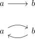
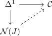
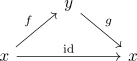
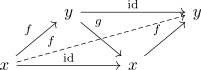
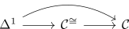
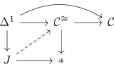

universal property of the classifier nerve
Proposition
Let $\mathcal{J}$ be the classifier nerve J and
be the induced morphism for the \(1\)-categorical inclusion of

Then for an infinity category $\mathcal{C}$ and morphism

TFAE:
- there exists an extension (note this is in general not unique, as there exists non degenerate simplices in each (?) degree)
- the morphism respresented by $\Delta^1 \rightarrow \mathcal{C}$ is an equivalence
Proof
1) $\implies$ 2)
follows from equivalence in an infinity category under functors where $J$ is a infinity-groupoid (eg. nerve of a category as kan complex and groupoid)
2) $\implies$ 1)
a) some rambling ?
one can construct an extension by hand: By assumption, there exists an inverse and witness of homotopy

Then one can fill

and TODO: repeatedly fill
b)
note that by assumption we have
By explicit description of an infinity groupoid core we have a factorization

By kan complex and terminal morphism as kan fibration , infinity groupoid core as infinity groupoid, infinity-groupoid and Kan complex, it suffices to solve the following lifting problem

resp. show that $\Delta^1 \rightarrow J$ is an anodyne.
But this follows from inclusion of Delta 1 into classifier nerve as anodyne